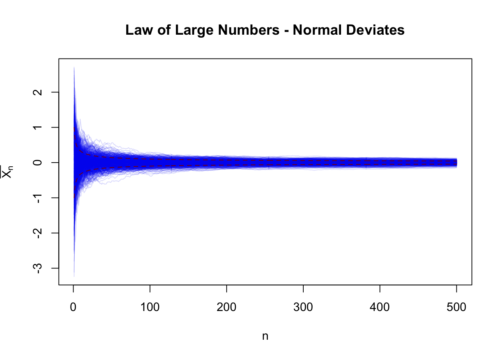
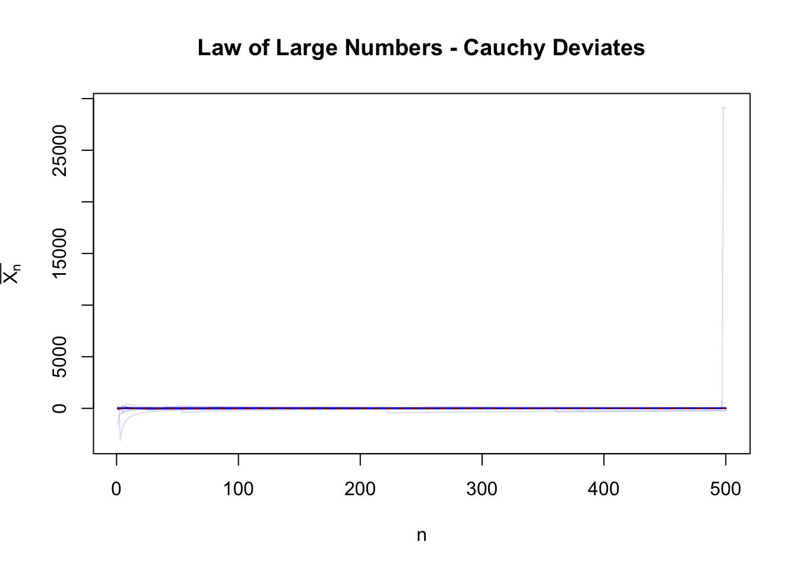

x <- seq(-5, 5, length.out=501)
plot(x, dnorm(x),
type="l", col="red4", lwd=2,
xlab="x", ylab=expression(f[X](x)),
main="Comparison of Normal (Red) and Cauchy (Green) PDFs")
lines(x, dcauchy(x), type="l", col="green4", lwd=2)On Tails of Distributions and Implications for Statistical Inference
\[\newcommand{\P}{\mathbb{P}} \newcommand{\E}{\mathbb{E}} \newcommand{\V}{\mathbb{V}}\]
In this set of notes, we introduce the concepts of the “tails” of a distribution and discuss implications for statistical inference.
The discussion of distribution tails is typically dominated by talk of “fat” or “heavy” tails. Heavy-tailed models are particularly popular in post-2008 finance, for reasons we will discuss below, as they naturally allow “crash” behvaior. Before we turn to heavy-tails, however, we need to discuss “standard” tails and their implications for statistical inference.
Much of statistical theory is built on a foundation of “tail bounds”. Tail bounds give an upper bound on the probability of some random variable being greater than some quantity: a prototypical tail bound is something like “the probability of procedure \(\mathscr{P}\) having error more than \(\delta\) is less than \(\epsilon\)”, where \(\delta\) and \(\epsilon\) are both some small numbers. For instance, a predictive model may guarantee that the probability of being off by more than 2 standard deviations is less than 5% or, equivalently, that 95% of observations will fall within \(2\sigma\) of the predicted value. Tail bounds can also be used to build confidence intervals: a tail bound of the form “the probability that the CI doesn’t contain the true value is less than 5% under the null” is essentially the definition of a confidence interval. Here, the error is binary (0 vs 1) but the basic machinery still holds.
In all these cases, we are constructing some random variable - the procedure error - and hoping to guarantee that it’s not too large. Typically, the procedure error is a (not-too-complex) function of several independent sources of ‘noise’ or error. The output of the procedure is then itself random1, as is its error. Rather counterintuitively, even if the error is a function of many random components, the aggregate effect of that error is usually quite predictable. This is a phenomenon we’ll see in many forms throughout this course, so let’s begin to explore it properly.
On the Behavior of Sample Means
Let’s start with the most fundamental and most well studied problem in all of statistics: estimating the mean of a distribution. Suppose we have a single sample \(X\) from some distribution. Without making any further assumptions on \(X\), we only assume it has a CDF \(F_X(\cdot)\), so we write \(X \sim F_X(\cdot)\). Let’s also assume that \(X\) (or perhaps, more precisely, \(F_X(\cdot)\)) has a mean \(\mu_X\) and a variance \(\sigma_X^2\), even if we are not yet able to compute them.
Since we are now in “statistics-mode”2 and have set ourselves the task of guessing \(\mu_X\), we need to define our “guessing procedure,” which in statistics jargon we call our “estimator”. It’s important to distinguish three very similar words in this context:
- The “Estimand” is the (population/distribution) quantity we are ultimately interested in, here \(\mu_X\).
- The “Estimator” is the procedure we use to guess at the estimand. It takes in data (observations) and produces a value, so it is a function, not a number.
- The “Estimate” is the value of the estimator on a particular data set; that is, it is the output of the estimator function.
In our simple case, our estimand is \(\mu_X\) and we need to define an estimator. Under the “when in doubt, average it out” rule of statistics, let’s define the sample mean \[\overline{X}_n = \textsf{MEAN}(\{X_1, \dots, X_n\}) = \frac{1}{n}\sum_{i=1}^n X_i\] as our estimator.3 By linearity of expectation, we see that
\[\E[\overline{X}_n] = \E\left[\frac{1}{n}\sum_{i=1}^n X_i\right] = \frac{1}{n}\sum_{i=1}^n \E[X_i] = \frac{1}{n}\sum_{i=1}^n \mu_X = \mu_X\]
This means that, on average, \(\overline{X}_n\) gets the ‘right’ answer of \(\mu_X\). In statistics, we thus say that \(\overline{X}_n\) is an unbiased estimator of \(\mu_X\).4 So, on average, \(\overline{X}_n\) is a pretty solid guess - but how well does it do on a single data set? Recall, as before, that this is our fundamental characterization of variance.5
\[\E[\text{MeanSquaredError}(\overline{X}_n, \mu_X)] = \E[(\overline{X}_n - \mu_X)^2] = \V[\overline{X}_n]\]
So the lower the variance of \(\overline{X}_n\), the better an estimator it is. So what actually is the variance of \(\overline{X}_n\)? If we assume \(X_1, \dots, X_n \buildrel{\text{iid}}\over\sim F_X(\cdot)\), we have developed enough machinery to show that:
\[\begin{align*} \V[\overline{X}_n] &= \V\left[\frac{1}{n} \sum_{i=1}^n X_i\right] \\ &= \frac{1}{n^2} \V\left[\sum_{i=1}^n X_i\right] \\ &= \frac{1}{n^2} \left(\sum_{i=1}^n \V[X_i]\right) \\ &= \frac{1}{n^2} \left(\sum_{i=1}^n \sigma_X^2\right) \\ &= \frac{1}{n^2} * n\sigma_X^2 \\ &= \frac{\sigma_X^2}{n} \end{align*}\]
This is quite nifty! As we get more samples and \(n\) grows, the variance of \(\overline{X}_n\) gets smaller! Put another way, as \(n \to \infty\), \(\overline{X}_n\) becomes increasingly “less random” until it settles down at the right answer of \(\mu_X\).
This phenomenon is important enough it gets a very cool sounding name:
The Law of Large Numbers
Suppose \(X_1, X_2, \dots, X_n, \dots\) are independent and identically distributed samples from a distribution with mean \(\mu_X\) and variance \(\sigma_X^2\). The sample average \(\overline{X}_n = n^{-1}\sum_{i=1}^n X_i\) converges to \(\mu_X\):6
\[ \overline{X}_n \to \mu_X\]
Quantitative Bounds on Random Deviations
So far, we have made the qualitative argument for a tail bound, but we don’t actually have any numbers to put on it. It’s clear that we want some version of “the probability of being at least \(k\) standard deviations off the mean is less than \(f(k)\)”, but where can we get such a bound?
We begin with an apparently unrelated result, commonly called Markov’s inequality.7
Markov’s Inequality
Suppose \(X\) is a non-negative random variable. Then for any \(a > 0\),
\[\P(X > a) \leq \frac{\E[X]}{a} \]
Note that this result requires \(X\) to be non-negative. If \(X\) were, e.g., a standard normal random variable with support \((-\infty, \infty)\), it would give us \(\P(\mathcal{N}(0, 1) \geq 0) \leq 0\), when in fact the true value if \(\P(\mathcal{N}(0, 1) \geq 0) = \frac{1}{2}\).
It turns out to be quite easy to prove Markov’s inequality using only the law of total expectation:
\[\begin{align*} \E[X] &= \overbrace{\E[X | X \leq a]}^{\text{Value between $0$ and $a$}}\overbrace{\P(X \leq a)}^{\text{Non-Negative}} + \E[X | X > a] \P(X > a) \\ \implies \E[X] &\geq \underbrace{\E[X | X > a]}_{\text{Value greater than $a$}} \P(X > a) \\ &\geq a * \P(X > a) \\ \implies \frac{\E[X]}{a} & \geq P(X > a) \end{align*}\]
as desired.
This is quite a nifty result - we now have the ability to bound tail probabilities \(P(X > a)\) in terms of only the “tail point” \(a\) and the (non-random, non-tail) expected value \(\E[X]\).
Looking a bit more closely at Markov’s inequality, we see that if \(\E[X]\) is small, \(P(X > a\) can’t be very large. This makes sense, if there was a large probability that \(X\) was larger than some value \(a\), that would have to bring up the value of \(\E[X]\). A small value of \(\E[X]\) certifies that \(X\) is “usually” small. Again - this is only true because \(X\) is non-negative. If we allowed both positive and negative values in \(X\), they could both be large, but they would “net out” in computing \(\E[X]\).
Markov’s inequality is most useful when applied to functions of random variables. Suppose \(\phi(\cdot)\) is a non-negative function. Then
\[\P(\phi(X) \geq a) \leq \frac{\E[\phi(X)]}{a} \]
for any random variable \(X\).
A particularly useful choice of \(\phi\) is our old friend, squared error loss from mean prediction. Taking \(\phi(X) = (X - \E[X])^2\), Markov’s Inequality gives us Chebyshev’s Inequality:
\[ \P\left[(X - \E[X])^2 \geq a\right] \leq \frac{\E[(X - \E[X])^2]}{a} = \frac{\V[X]}{a} \]
Customarily, we take \(a = k^2\V[X]\) to obtain:
\[\P\left[(X - \E[X])^2 \geq k^2\V[X]\right] \leq \frac{1}{k^2}\]
Taking square roots of both terms in the left side probability expression, we get an essentially uniform prediction bound:
Chebyshev’s Inequality
Let \(X\) be a random variable with mean \(\mu_X\) and variance \(\sigma_X^2\). Then, for any \(k \geq 0\), we have the tail bound:
\[ \P\left[|X - \mu_X| \geq k \sigma_X\right] \leq \frac{1}{k^2} \]
This is quite remarkable. The “68%/95%/99%” set of bounds for the normal distribution are well known. Using Chebyshev, the same bounds are:
| \(k\) | Prediction Interval | Gaussian Bound | Chebyshev Bound |
|---|---|---|---|
| \(k=1\) | \(\mu_X \pm \sigma_X\) | 68.2% | – |
| \(k=2\) | \(\mu_X \pm 2\sigma_X\) | 95.4% | 75% |
| \(k=3\) | \(\mu_X \pm 3\sigma_X\) | 99.7% | 88.8% |
| \(k=4\) | \(\mu_X \pm 4\sigma_X\) | 99.99% | 93.75% |
| \(k=5\) | \(\mu_X \pm 5\sigma_X\) | 99.9999% | 96% |
Our bounds are not as tight as we get if we know \(X\) is Gaussian, but they hold for any random variable, so long as we know it’s mean and variance - no distributions needed!
These type of bounds - often called “non-parametric” - are quite popular in modern statistics and machine learning. When calibrating a complex machine learning system, e.g. a voice recognition system used to authenticate access to a sensitive banking system, there may be nothing “Gaussian” about the problem. But, so long as we have a numerical measure of accuracy with bounded mean and standard deviation, we can use Chebyshev to provide performance gurantees. In fact, because Chebyshev holds for any random variable, it is often quite pessimistic. If you use a Chebyshev bound, your clients will often be pleasantly surprised by how much better your model is than expected.
Application to Sample Means
Let’s now apply Chebyshev’s inequality to our previous example of the estimator \(\overline{X}_n\). Let’s now also assume that we know that \(\sigma_X = 1\) to make some of the math a bit easier.8 Then, by our previous argument, we have \(\V[\overline{X}_n] = n^{-1}\). Plugging this into Chebyshev’s inequality, we have:
\[\P(|\overline{X}_n - \mu_X| > k/n) \leq \frac{1}{k^2}\]
Equivalently, if we set \(k' = k/n\) and \(k = nk'\), this gives us
\[ \P(|\overline{X}_n - \mu_X| > k) \leq \frac{1}{k^2n^2} \]
At some typical values of \(k, n\), let’s see what probabilities this gives us:
| Sample Size | \(n=10\) | \(n=50\) | \(n=100\) | \(n=1000\) |
|---|---|---|---|---|
| \(k=1\) | 1% | 0.04% | 0.01% | 0.0001% |
| \(k=2\) | 0.25% | 0.01% | 0.0025% | 0.000025% |
| \(k=4\) | 0.0625% | 0.0025% | 0.00015625% | 0.0000015625% |
This is great! Even with very small sample size \(n = 10\), we have 99% chance of being within one standard deviation of the true \(\mu_X\).
Application to Indicator Functions
A particularly useful set of random variables are our indicator functions
\[1_A(x) = \begin{cases} 1 & x \in A \\ 0 & x \notin A \end{cases}\]
Indicator functions are particularly useful because we can use them to turn guarantees on sample means into guarantees on probabilities. Recall the fundamental relationship:
\[\E[1_A(X)] = \P(X \in A)\]
Because indicator functions are also bounded, we can easily see that their variance is always bounded above by 1, unlike in our previous discussion (sample means) where we had to assume it was known.
To adapt our previous discussion, let
\[\P_n(X \in A) = \frac{1}{n} \sum_{i=1}^n 1_A(X_i) \]
be the sample empirical probability associated with a set \(A\). Clearly, we expect it to behave analogously to the sample mean. As before, we have that it is unbiased and has decaying variance:
\[\E[\P_n(X \in A)] = \P(X \in A) \]
and
\[\V[\P_n(X \in A)] \leq \frac{1}{n}\]
We can plug these into Chebyshev’s Inequality to get guarantees on the quality of \(\P_n(X \in A)\) as an estimator of the estimand \(\P(X \in A)\). Put another way, we can show that, for any set \(A\), the sample probability converges to the “true” probability as \(n \to \infty\). The law of large numbers (combined with the frequency interpretation of probability) strikes again!
Practice
Apply Chebyshev’s Inequality to \(\P_n(X \in A)\) to show that:
We can get good bounds on the error of the sample probability as an estimate of the true probability.
Refine the argument using \(\V[\text{Bernoulli}] \leq \frac{1}{4}\) to get tighter bounds.
Heavy Tails
So far, life is good. We have nice bounds that decay rapidly and hold with only minimal assumptions on \(X\). Sample means and sample probabilities do exactly what we want them to and, without too much work, we expect we could apply our techniques to other quantities of interest like medians and quartiles. What could go wrong?
The law of large numbers tells us that, with enough data, the randomness “washes out” from a large sample. But what happens if the randomness is so wild that it can’t be washed out? The LLN fails to hold and we are in a dark and scary place. This is the domain of heavy-tailed monsters.
The most famous heavy-tailed distribution is the Cauchy distribution, named after the French mathematician Augustin-Louis Cauchy and pronounced either Co-shee or Cow-shee depending on the quality of your French accent. It has a rather benign PDF and CDF:
\[\begin{align*} f_X(x) &= \frac{1}{\pi(1 + x^2)} \\ F_X(x) &= \frac{1}{\pi}\arctan(x) + \frac{1}{2} \end{align*}\]
Graphically, it looks quite similar to its normal distribution kin.
x <- seq(-5, 5, length.out=501)
plot(x, pnorm(x),
type="l", col="red4", lwd=2,
xlab="x", ylab=expression(f[X](x)),
main="Comparison of Normal (Red) and Cauchy (Green) CDFs")
lines(x, pcauchy(x), type="l", col="green4", lwd=2)Eyeballing these graphs, we can see that the normal distribution has “more” mass near (\(x\) near 0) and the Cauchy has more mass in the tails (\(x\) far from 0), but the differences don’t appear that large.
But looks can deceive! The Cauchy distribution is quite a wild thing: it in fact fails to have an expected value. Mathematically, the integral
\[\E_{X \sim \text{Cauchy}}[X] = \int_{-\infty}^{\infty} \frac{x}{\pi(1+x^2)}\,\text{d}x\]
is ill-posed. To see this formally, note that the integrand is approximately \(1/x\) so the indefinite integral is \(\ln(x)\) which goes to \(\infty\).
But what does this actually mean? We first note that, if \(\E[X]\) does not exist, neither does \(\V[X]\).9 From our discussion above, this means we have no law of large numbers. It’s easiest to see the impact of this visually.
Let’s start by simulating large numbers of normal random variables and plotting their cumulative means:
n <- 500
r <- 500
XX <- matrix(rnorm(n * r), nrow=r)
XX <- apply(XX, 2, dplyr::cummean)
plot(1:n, XX[,1], type="n",
xlab="n", ylab=expression(bar(X[n])),
ylim = range(XX),
main="Law of Large Numbers - Normal Deviates"
)
for(i in 1:r){
lines(1:n, XX[,i], col=scales::alpha("blue2",0.15))
}
lines(1:n, +1/sqrt(1:n), col="red4", lty=2)
lines(1:n, -1/sqrt(1:n), col="red4", lty=2)
Here, each line is a different ‘universe’ in which we observe \(\overline{X}_n\) for different values of \(n\). For small values of \(n\) (left hand side of the figure), there is a large variance, but as \(n \to \infty\) and we move right, the variance washes out quickly. In fact, it washes out at a rate of \(1/\sqrt{n}\) consistent with our theory for \(\sigma_{\overline{X}_n} = \sqrt{\V[\overline{X}_n]}\).
Contrast this with the Cauchy distribution:
n <- 500
r <- 500
XX <- matrix(rcauchy(n * r), nrow=r)
XX <- apply(XX, 2, dplyr::cummean)
plot(1:n, XX[,1], type="n",
xlab="n", ylab=expression(bar(X[n])),
ylim = range(XX),
main="Law of Large Numbers - Cauchy Deviates"
)
for(i in 1:r){
lines(1:n, XX[,i], col=scales::alpha("blue2",0.15))
}
lines(1:n, +1/sqrt(1:n), col="red4", lty=2)
lines(1:n, -1/sqrt(1:n), col="red4", lty=2)
There are occasional crazy large spikes which “blow up” the sample mean. These spikes are possible under any distribution with \(\mathbb{R}\)-support, but they are common enough for the Cauchy that we ‘break’ the sample mean.
This is the essence of heavy tails. Heavy-tailed distributions are, in their purest form, distributions that are “so wild” they break the fundamental building blocks of statistics. Of course, not everything is doomed in the world of heavy tails - we can replace the sample mean with something like the sample median, which is more robust to these crazy spikes - but we have to tread much more carefully.
Whence Heavy Tails?
So where do heavy tails come from? We discuss one example below, stock market returns, where heavy tails are a fundamental feature of the underlying data generating process. In the land of theory, however, it’s a bit harder to see what might give rise to heavy tails. But whenever we want to ‘break’ something in math, we have one ever useful standby - division by zero.
Suppose we have two IID standard normal random variables \(X, Y\). What is the behavior of their ratio \(Z = X / Y\)? It turns out that \(Z\) has a Cauchy distribution! On some level, this makes sense: if \(Y\) is standard normal, it is “usually near 0” in some probabilistic sense, so we are “usually nearly dividing by 0”. While exact division by zero isn’t something we need to worry about for continuous \(Y\), we are close to division by 0 whenever \(Y\) is small. Diving deeper, we know that dividing by small numbers gives large numbers, so the probability \(\P(|Y| < \epsilon)\) for some small \(\epsilon\) essentially gives us the probability of very large terms showing up, \(\P(1/|Y| > 1/\epsilon)\).
Concisely, the Cauchy is “usually infinity” in the same way that the normal distribution is “usually zero”. Never exactly, but often enough for that to define its behavior.
Stepping back, this gives us point of caution in our actual statistical work. Be very cautious dividing by random variables, particularly if they have significant mass near zero. Even if you are lucky enough to never exactly divide by zero, you are probabilisticly close enough that things go horribly wrong. We will next discuss one circumstance in which this happens with some regularity.
Heavy Tails in Finance
Suppose that the price of a stock is given by \(S_t\) - here \(S_t\) is a random function, giving the price of the stock at any time \(t\). It is common to report the returns of investments in this stock over some time interval:
\[R_{t_1 \to t_2} = \frac{S_{t_2}}{S_{t_1}} - 1\]
In more mathematical contexts, we instead use continuous or log returns to measure performance:
\[R_{t_1 \to t_2} = \log\left(\frac{S_{t_2}}{S_{t_1}}\right)\] For very small time intervals, \(S_{t_2} \approx S_{t_1}\), and these quantities converge. Log returns are preferred in mathematiacl contexts because they aggregate nicely over time and you don’t have to worry about compounding effects.10
Regardless of the return convention used, we see division by the random quantity \(S_{t_1}\) and the hair on the back of our head should stand up. In more economic terms, \(S_t\) can go to zero (or near zero) whenever a company enters bankruptcy. And that’s something that happens! Not every day to every company, but it’s certainly not unheard of.
The impact of bankruptcy is clearest in log-returns: when a stock goes to zero, it has a \(-\infty\%\) return: there’s simply no coming back from that, no matter how long and how regularly the stock otherwise goes up. Because of that possibility, the law of large numbers does not apply to individual stock returns. Single-stock investing, no matter how long a time frame, remains risky: no LLN guarantees kick in.
While this is not a quantitative investing class, it’s also important to note that a multi-asset portfolio fails to have this issue unless there’s a real chance that every company in the portfolio goes backrupt at the same time. With multi-asset investment, we work instead with classical returns: even if half the portfolio goes to zero, the losses to the overall portfolio are capped at 50% and so things aren’t too heavy failed. (Note how this argument breaks down as you add leverage - your losses are no longer capped!)
Portfolio diversification is a very good thing!
Degrees of Heaviness
So far, we have discussed three distributions:
- Bernoulli (indicators)
- Normal
- Cauchy
These exist on a spectrum of “heavy-tailedness”.
Bounded random variables, like the Bernoulli, have the thinnest and nicest possible tails. After the end of their support, the PDF goes to zero and the tails vanish into nothingness.
On the other end, distributions like the Cauchy are about as heavy tailed as possible. Recall that a PDF has to integrate to 1. The family of Cauchy-like PDFs
\[f_X(x) = \frac{a}{1+|x|^c} \]
only integrate to \(1\) for \(c > 1\). (Things blow up precisely at \(c = 1\).) So, while we could go a bit more tail-tastic than the Cauchy, taking \(c = 1.5\) or even \(c = 1.1\), things really can’t get any heavier before we fail to have a PDF at all. Put another way, if a distribution has tails too much heavier than a Cauchy, it’s not only too wild to have a mean, it’s too wild to even define a real distribution!
But there is a wide range of distributions between these two families, broadly those with ‘exponential decay’ tails. We have already seen the normal distribution which has ‘squared exponential’ tails: \(f_X(x) \propto e^{-x^2}\). We can thicken these tails by removing the square, giving us the Laplace distribution $f_X(x) \(e^{-|x|}\). We can also ‘thin’ the normal tails further by increasing the exponent, giving even faster decay: \(f_X(x) \propto e^{-x^4}\) or \(f_X(x) \propto e^{-x^6}\). These distributions, generally known as “generalized normal” or “Subbotin” distributions, are less common, but have been applied in a few settings successfully.
“Heavy tails” are not a totally distinct field of models - they are just the hardest, nastiest limits of normal behaviors that require us to rethink many of our basic assumptions. In general, if we’re worried about large deviations having large effects, we need to change our estimator to minimize the impact of a large value. Classically, tools like the sample median are used, but we also have Windsorized means, robust regression methods, etc. In more modern work, particularly “CS-heritage” machine learning theory, 0/1-classification problems take center stage and we can sidestep any discussion of heavy tails by only looking at indicator functions (right/wrong prediction), which have bounded tails by construction.
Unfortunately, these tools often lack the nice properties we associated with means and expectations: notably, they do not play quite as well with differentiation. But that’s a story for another course.
As we progress in this course, we won’t see too much more about heavy-tailed random variables. Our goal is to learn all the probability necessary for classical (mean-oriented) statistics and machine learning. But it’s always good to keep the Cauchy in the back of your mind: it’s easy to worth with, but it still breaks nearly everything. Whenever we claim a new result or discuss a phenomenon, test it against a Cauchy - does it need an LLN to work? Is there a transformation we can apply to our random variable to guarantee an LLN holds? This will help sharpen your intuition for when the “standard” guarantees of probability hold and when they fail.
Footnotes
Recall the “Random In, Random Out” principle.↩︎
Recall that “probability-mode” thinking is ‘forward’–given a distributional model, what predictions can I make about future observations–while “statistics-mode” thinking is ‘backwards’–given some observational data, what can I infer about the distribution of the underlying population? Statistical theory blends both of these since we need to think “forward” to figure out a procedure that will reliably work “backwards”, but statistical practice is looking from finite data to distribution.↩︎
Ultra-pedantically, this is actually a series of estimators, \(\textsf{MEAN}_1(X_1)\), \(\textsf{MEAN}_2(X_1, X_2)\), \(\dots\), but even I’m not sufficiently obnoxious to dwell on this point except in the vanishingly rare circumstances where it matters.↩︎
This use of “bias” is not (necessarily) related to concepts like prejudice. It’s the older meaning that still comes up in idioms like “cut on a bias” as opposed to “cut straight” in carving meat. See Wikipedia for more discussion.↩︎
Later in this course, we will discuss the decomposition of error for biased estimators.↩︎
The mathematically minded reader might note that we have not specified the type of convergence here. More precisely, what exactly does it mean for a random quantity \(\overline{X}_n\) to converge to a non-random quantity like \(\mu_X\)? From our discussion of continuous random variables, we know that \(\P(\overline{X}_n = \mu_X)\) is either zero or ill-defined, so something more subtle is at play here. In fact, there are actual several different “modes of convergence” we could use here; each gives rise to a different Laws of Large Numbers. We will not worry about such distinctions in this course.↩︎
Like so many things in the history of science, Markov’s Inequality is not named after its original discoverer, Pafnuty Chebyshev, but rather his student, Andrey Markov. See Stigler’s Law of Eponomy for an exhaustive discussion of this cruel phenomenon.↩︎
We can also estimate \(\sigma_X\) from the data, but it makes the math just a bit more cumbersome, so we’ll hold off on it for now.↩︎
In general, \(\E[X^p] \text{ exists } \implies \E[X^q] \text{ exists for } p > q\))↩︎
Standard returns aggregate nicely “across assets”, so a portfolio that is 50% stock A and 50% stock B will have the average (standard) return of A and B. Log returns do not satisfy this property. Conversely, a stock that has a log return of 10% followed by another log return of -10% is unchanged; a stock that has a classical return of 10%, followed by a classical return of -10%, is still down 1%. Both conventions are useful - it just depends which direction you “aggregate” more frequently. Classically, mathematical finance is more concerned with modelling one or two assets over a lot of very short intervals, preferring log returns, but multi-asset portfolio modeling is increasingly important, particularly in risk management contexts, and is more suited for classical returns.↩︎